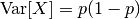
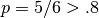

1.11. Feature selection¶
The classes in the sklearn.feature_selection module can be used for feature selection/dimensionality reduction on sample sets, either to improve estimators’ accuracy scores or to boost their performance on very high-dimensional datasets.
1.11.1. Removing features with low variance¶
VarianceThreshold is a simple baseline approach to feature selection. It removes all features whose variance doesn’t meet some threshold. By default, it removes all zero-variance features, i.e. features that have the same value in all samples.
As an example, suppose that we have a dataset with boolean features, and we want to remove all features that are either one or zero (on or off) in more than 80% of the samples. Boolean features are Bernoulli random variables, and the variance of such variables is given by

so we can select using the threshold .8 * (1 - .8):
>>> from sklearn.feature_selection import VarianceThreshold
>>> X = [[0, 0, 1], [0, 1, 0], [1, 0, 0], [0, 1, 1], [0, 1, 0], [0, 1, 1]]
>>> sel = VarianceThreshold(threshold=(.8 * (1 - .8)))
>>> sel.fit_transform(X)
array([[0, 1],
[1, 0],
[0, 0],
[1, 1],
[1, 0],
[1, 1]])
As expected, VarianceThreshold has removed the first column, which has a probability  of containing a one.
1.11.2. Univariate feature selection¶
Univariate feature selection works by selecting the best features based on univariate statistical tests. It can be seen as a preprocessing step to an estimator. Scikit-learn exposes feature selection routines as objects that implement the transform method:
- SelectKBest removes all but the k highest scoring features
- SelectPercentile removes all but a user-specified highest scoring percentage of features
- using common univariate statistical tests for each feature: false positive rate SelectFpr, false discovery rate SelectFdr, or family wise error SelectFwe.
Using the boolean-feature example given above,
we can perform a  test to the samples
to retrieve only the two best features as follows:
test to the samples
to retrieve only the two best features as follows:
>>> from sklearn.feature_selection import VarianceThreshold
>>> X = [[0, 0, 1], [0, 1, 0], [1, 0, 0], [0, 1, 1], [0, 1, 0], [0, 1, 1]]
>>> sel = VarianceThreshold(threshold=(.8 * (1 - .8)))
>>> sel.fit_transform(X)
array([[0, 1],
[1, 0],
[0, 0],
[1, 1],
[1, 0],
[1, 1]])
These objects take as input a scoring function that returns univariate p-values:
- For regression: f_regression
- For classification: chi2 or f_classif
Feature selection with sparse data
If you use sparse data (i.e. data represented as sparse matrices), only chi2 will deal with the data without making it dense.
Warning
Beware not to use a regression scoring function with a classification problem, you will get useless results.
Examples:
1.11.3. Recursive feature elimination¶
Given an external estimator that assigns weights to features (e.g., the coefficients of a linear model), recursive feature elimination (RFE) is to select features by recursively considering smaller and smaller sets of features. First, the estimator is trained on the initial set of features and weights are assigned to each one of them. Then, features whose absolute weights are the smallest are pruned from the current set features. That procedure is recursively repeated on the pruned set until the desired number of features to select is eventually reached.
RFECV performs RFE in a cross-validation loop to find the optimal number of features.
Examples:
- Recursive feature elimination: A recursive feature elimination example showing the relevance of pixels in a digit classification task.
- Recursive feature elimination with cross-validation: A recursive feature elimination example with automatic tuning of the number of features selected with cross-validation.
1.11.4. L1-based feature selection¶
1.11.4.1. Selecting non-zero coefficients¶
Linear models penalized with the L1 norm have sparse solutions: many of their estimated coefficients are zero. When the goal is to reduce the dimensionality of the data to use with another classifier, they expose a transform method to select the non-zero coefficient. In particular, sparse estimators useful for this purpose are the linear_model.Lasso for regression, and of linear_model.LogisticRegression and svm.LinearSVC for classification:
>>> from sklearn.svm import LinearSVC
>>> from sklearn.datasets import load_iris
>>> iris = load_iris()
>>> X, y = iris.data, iris.target
>>> X.shape
(150, 4)
>>> X_new = LinearSVC(C=0.01, penalty="l1", dual=False).fit_transform(X, y)
>>> X_new.shape
(150, 3)
With SVMs and logistic-regression, the parameter C controls the sparsity: the smaller C the fewer features selected. With Lasso, the higher the alpha parameter, the fewer features selected.
Examples:
- Classification of text documents using sparse features: Comparison of different algorithms for document classification including L1-based feature selection.
L1-recovery and compressive sensing
For a good choice of alpha, the Lasso can fully recover the exact set of non-zero variables using only few observations, provided certain specific conditions are met. In particular, the number of samples should be “sufficiently large”, or L1 models will perform at random, where “sufficiently large” depends on the number of non-zero coefficients, the logarithm of the number of features, the amount of noise, the smallest absolute value of non-zero coefficients, and the structure of the design matrix X. In addition, the design matrix must display certain specific properties, such as not being too correlated.
There is no general rule to select an alpha parameter for recovery of non-zero coefficients. It can by set by cross-validation (LassoCV or LassoLarsCV), though this may lead to under-penalized models: including a small number of non-relevant variables is not detrimental to prediction score. BIC (LassoLarsIC) tends, on the opposite, to set high values of alpha.
Reference Richard G. Baraniuk Compressive Sensing, IEEE Signal Processing Magazine [120] July 2007 http://dsp.rice.edu/files/cs/baraniukCSlecture07.pdf
1.11.4.2. Randomized sparse models¶
The limitation of L1-based sparse models is that faced with a group of very correlated features, they will select only one. To mitigate this problem, it is possible to use randomization techniques, reestimating the sparse model many times perturbing the design matrix or sub-sampling data and counting how many times a given regressor is selected.
RandomizedLasso implements this strategy for regression settings, using the Lasso, while RandomizedLogisticRegression uses the logistic regression and is suitable for classification tasks. To get a full path of stability scores you can use lasso_stability_path.
Note that for randomized sparse models to be more powerful than standard F statistics at detecting non-zero features, the ground truth model should be sparse, in other words, there should be only a small fraction of features non zero.
Examples:
- Sparse recovery: feature selection for sparse linear models: An example comparing different feature selection approaches and discussing in which situation each approach is to be favored.
References:
- N. Meinshausen, P. Buhlmann, “Stability selection”, Journal of the Royal Statistical Society, 72 (2010) http://arxiv.org/pdf/0809.2932
- F. Bach, “Model-Consistent Sparse Estimation through the Bootstrap” http://hal.inria.fr/hal-00354771/
1.11.5. Tree-based feature selection¶
Tree-based estimators (see the sklearn.tree module and forest of trees in the sklearn.ensemble module) can be used to compute feature importances, which in turn can be used to discard irrelevant features:
>>> from sklearn.ensemble import ExtraTreesClassifier
>>> from sklearn.datasets import load_iris
>>> iris = load_iris()
>>> X, y = iris.data, iris.target
>>> X.shape
(150, 4)
>>> clf = ExtraTreesClassifier()
>>> X_new = clf.fit(X, y).transform(X)
>>> clf.feature_importances_
array([ 0.04..., 0.05..., 0.4..., 0.4...])
>>> X_new.shape
(150, 2)
Examples:
- Feature importances with forests of trees: example on synthetic data showing the recovery of the actually meaningful features.
- Pixel importances with a parallel forest of trees: example on face recognition data.
1.11.6. Feature selection as part of a pipeline¶
Feature selection is usually used as a pre-processing step before doing the actual learning. The recommended way to do this in scikit-learn is to use a sklearn.pipeline.Pipeline:
clf = Pipeline([
('feature_selection', LinearSVC(penalty="l1")),
('classification', RandomForestClassifier())
])
clf.fit(X, y)
In this snippet we make use of a sklearn.svm.LinearSVC to evaluate feature importances and select the most relevant features. Then, a sklearn.ensemble.RandomForestClassifier is trained on the transformed output, i.e. using only relevant features. You can perform similar operations with the other feature selection methods and also classifiers that provide a way to evaluate feature importances of course. See the sklearn.pipeline.Pipeline examples for more details.